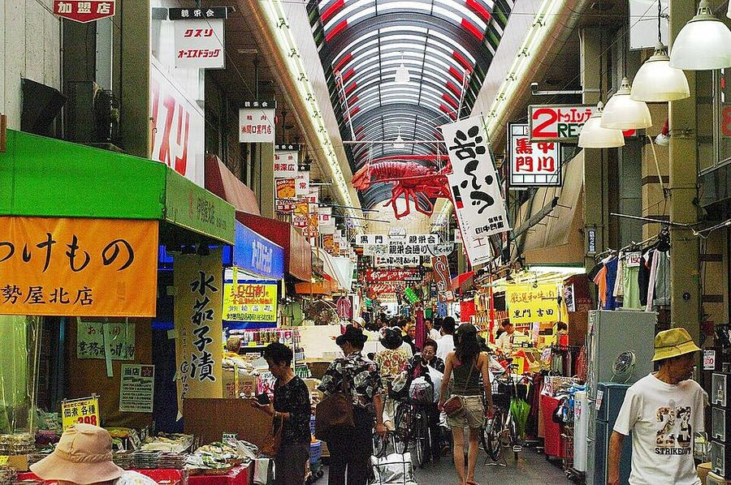
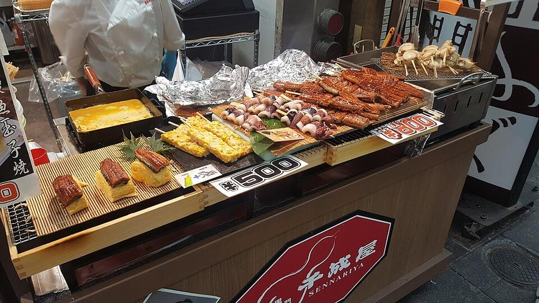
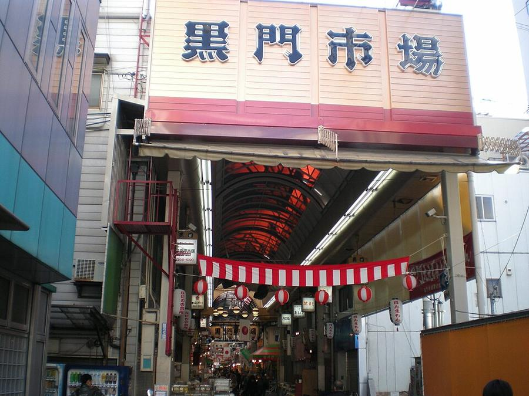

9Рынок Kuromon
黒門市場 · Юг · Namba, Shinsekai, Tennoji
В плане на Вс 25.10 - смотреть день



Рынку около 200 лет (с 1822-23 года): ~580 м крытых рядов и ~150 лавок. Рыба, морепродукты на гриле, говядина на шпажках, фрукты - едят у прилавков и на стойках внутри. Зимой славится фугу, летом угрём hamo.
Честно: сейчас это в основном туристический рынок, и японская Википедия (2026) пишет о завышенных ценах. Идти за атмосферой и перекусом. У каждой лавки свои часы, к вечеру закрываются.
| Часы | у каждой лавки свои, по списку рынка обычно с 9:00 до 18:00-21:00 |
|---|---|
| Вход | - |
| На месте | 40-60 мин |
| Дождь | ☂️ крытая улица, в дождь - да |
Источник часов и цен: kuromon.com (офиц.), ja.wikipedia
Как добраться от отеля
- Метро Midosuji до Namba (9 мин) + ~10 мин пешком на восток; от Dotonbori ~12 мин.
Видео


Рядом

8. Dotonbori и Hozenji Yokocho днёмКанал и вывески без ночной толпы, тихий каменный переулок

10. Shinsekai и башня TsutenkakuРетро-квартал 1912 года, кушикацу, башня 1956 года
Фото: Wikimedia Commons, автор и лицензия под каждым. Поезда: Yahoo!乗換案内 на 24-26.10.2026, пешие отрезки: OSRM. Часы и цены проверены 24.10.2026 03:16 JST. ← ко всем местам